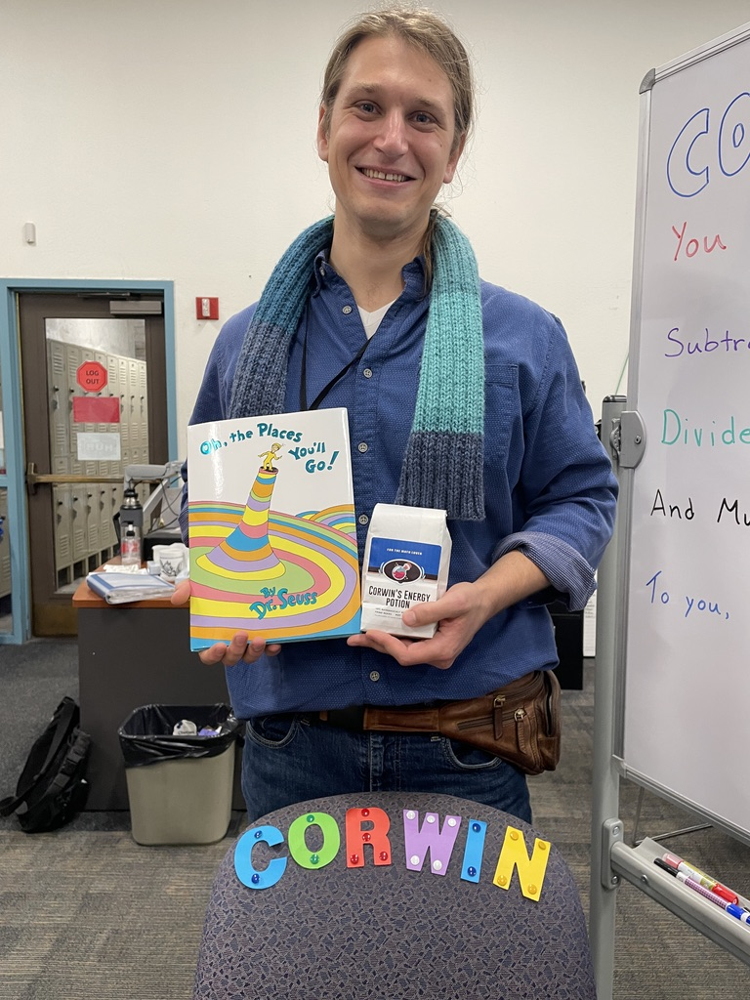

Math Tutoring in Santa Cruz
with Corwin Kelly
Interested in tutoring? Fill out my contact form to get started.
Services:
I specialize in tutoring college students in calculus and statistics.
I also work with middle and high school students in math and science.
Rate: $65/hour (ask about discounted rate for regularly scheduled sessions).
About Me:
- B.S. in Mathematics, University of California Santa Cruz (2022)
- 8+ years of tutoring experience, including Cabrillo College and private tutoring
- One year of experience teaching math and science for primary and middle school age students
- Credentialed substitute teacher in California
- C.V.
My Approach to Tutoring
I'm passionate about math and science and nothing brings me greater pleasure than sharing my passions! I believe everyone is capable of succeeding in their science and math journey with proper support. My first priority is to understand what your goals and needs are and figure out how to help you achieve them. Beyond that it's my hope with all of my students that I can nurture and stimulate a sense of curiosity and appreciation for the world of math, as well as a confidence and willingness to engage with math wherever they may encounter it in the future.

Testimonials:
Corwin has helped both of my kids immensely. He does a great job connecting with both my teen daughter and son with genuine curiosity in their interests. One of my kids really struggles to focus and stick with it. And yet I have been so impressed with how much Corwin gets her to do, in creative ways. My kids look forward to the fun math puzzle Corwin brings to the end of the lesson. One of the most special things Corwin brings is his genuine excitement for math that shines through as they talk about how math is applied in life. I feel so grateful to have Corwin as a tutor and mentor for my kids.
– Sam
We highly recommend Corwin, he is approachable and engaging. My kids look forward to being tutored by him and value his time and attention. He explains advanced math concepts in a thoughtful way, helping them stay current in class and preparing them to understand future topics.
– Brooke
I have been tutoring with Corwin for over a year now and it has been one of the best investments I have ever made. After not having been in school for many years, I knew getting up to speed with math would be a challenge. Since working with Corwin I am not only up to speed, but often ahead of my classmates and peers. He pushes me to make valuable connections and develop a deeper understanding rather than simply memorize formulas. He customizes lesson plans and often gives me additional homework to help me understand concepts I am struggling with. He is truly caring and passionate about students success. I highly recommend working with him no matter your education level!
–Alexandra
Ready to get started? Fill out my contact form.